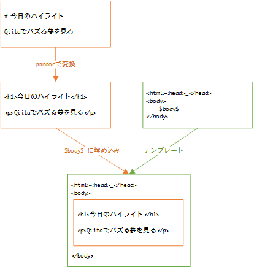

Hakyllでブログを作る(実践編)
Haskellのアドベントカレンダー初参加です。よろしくお願いします。
このサイトはHakyllで運営しています。
少しずつノウハウが溜まってきたのでまとめてみたいと思います。
Hakyllのチュートリアル的な内容になっています。
目次
- テンプレ展開
- ページ作成の流れ
- 記事一覧を5記事ごとに分割(ページネーション)
- RSS/Atom Feed作成
- 「続きを読む」のリンク(ティーザー)
- タグ付けされた記事一覧
- シンタックスハイライト
- 【リンク】github pagesで作ったブログを公開
それでは、さっそくいってみましょう。
テンプレ展開
stackには、hakyll用のテンプレートが準備されていますので、それを使っていきます。
stack new を打つ前に、 「~/.stack/config.yaml」 に以下の様な情報を書いておくとテンプレに載せてくれます。
templates:
params:
author-email: < mail address >
author-name: < your name >
copyright: 2015, < your name >
github-username: < github user name >
category: Web # なんでも良いです。テンプレを展開してみましょう。
stack new <プロジェクト名> hakyll-template
プロジェクト名は何でも良いので、おためしだったら 「myblog」 とか、github pagesで公開するなら 「githubのユーザ名-github-io」 みたいなのが良いかと思います。ここでは、 「user-github-io」 として進めていきます。
テンプレを展開したら、cabalファイル 「user-github-io.cabal」 内の 「executable」 の名称を 「site」 などタイピングしやすい単語にしておきましょう。
webページをビルドするときに実行するので、あとあとハッピーです。ここでは、 「site」 に変更したとして進めていきます。
stack build でhakyllをセットアップしておきましょう。
以降、Haskellのソースを修正した時は stack build をして、
stack exec site build (2回目以降は、 「rebuild」 )で、webページをビルドして、
stack exec site watch で、テスト用のサーバが、 http://127.0.0.1:8000 で立ち上がります。
ページ作成の流れ
Hakyllで、webページを作るときは、
- markdownなどで、記事を書き、
- それが、htmlに変換されて、
- テンプレートに埋め込まれる。
のが基本イメージです。

「どの記事と、どのテンプレートをあわせて、webサイトのどこに表示する」とか、「この記事にこの情報を埋め込む」とか、をHaskellのプログラム(デフォルトは 「site.hs」 )で作っていきます。
たとえば、 「site.hs」 をのぞいてみると、以下の様なソースがあります。
これは、
「images/*」 にマッチするファイルを、
webサイトの同じパス 「http://user.github.io/images/*」 に (idRoute)
そのままコピーする。 (copyFileCompiler)
ということです。
はたまた、以下の様なソースは、
match (fromList ["about.rst", "contact.markdown"]) $ do
route $ setExtension "html"
compile $ pandocCompiler
>>= loadAndApplyTemplate "templates/default.html" defaultContext
>>= relativizeUrls「abount.rst」 と 「contact.markdown」 を、
拡張子を 「html」 に変換して、 (setExtension "html")
中身は、pandocでhtmlに変換して、 (pandocCompiler)
「default.html」 のテンプレートを適用して、 (loadAndApplyTemplate "templates/default.html" defaultContext)
記事の中のURLを相対パスに書き換える。 (relativizeUrls)
となります。
テンプレートを適用するときの 「defaultContext」 には、本文やタイトルを表す 「$body$」 や 「$title$」 などの情報が埋め込まれるようになっています。
追加で、情報を埋め込むときは、 Context に埋め込む情報をまとめて、テンプレートに合わせる、というやり方になります。
例えば、以下は、 「defaultContext」 の情報に、「ブログ記事の日時」の情報を(ファイル名などから)抽出して、追加しています。すると、テンプレート内の 「$date$」 がブログ記事の日時の情報に変換されます。
他にも、複数の記事をまとめて、新たに一覧のページを作ることもできます。
create ["archive.html"] $ do
route idRoute
compile $ do
posts <- recentFirst =<< loadAll "posts/*"
let archiveCtx =
listField "posts" postCtx (return posts) `mappend`
constField "title" "Archives" `mappend`
defaultContext
makeItem ""
>>= loadAndApplyTemplate "templates/archive.html" archiveCtx
>>= loadAndApplyTemplate "templates/default.html" archiveCtx
>>= relativizeUrlsこちらは、次のようになります。
「archive.html」 というページを以下の通り作ります。(一部省略)
「posts/」 配下の記事を全て読み込んで、日付が新しい順に並べて 「posts」 に格納。 (posts <- recentFirst =<< loadAll "posts/*")
記事の情報を 「$posts$」 として使えるよう情報を埋め込み。 (listField "posts" postCtx (return posts))
「archive.html」 と 「default.html」 のテンプレートを反映させる。
テンプレートの方は、どうなっているかというと、 「archive.html」 では、 「$partial("templates/post-list.html")$」 となっていて、これは、 「post-list.html」 の内容を埋め込むということなので、
「post-list.html」 の方を見ると、以下のようになっていて、
「$posts$」 に埋め込まれた記事の情報分繰り返す。 ($for(posts)$)
という使い方ができるようになっています。
それぞれの関数がどんな役割をしているか、を確認するには、HackageのIndexのページで検索するのが、便利です。
さて、ここまでで、デフォルトのテンプレートの中身がだいたい把握できたかと思います。次の記事では、脱テンプレートということで、いろいろカスタマイズしていきたいと思います。
よくわからないところなどあれば、コメントいただければと思います。